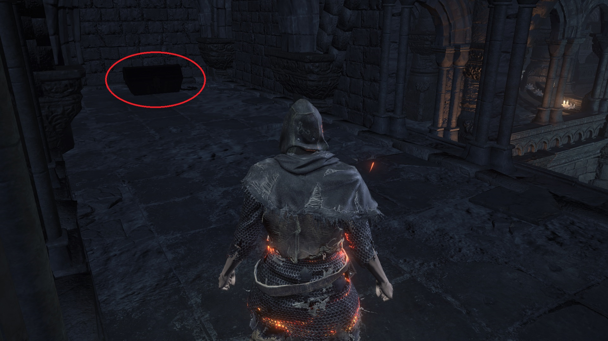

Covetous Silver Serpent Ring
The Silver Serpent Ring allows you to absorb at least 10% more souls from defeated enemies. Four variations of this ring exist, each giving you a higher percentage bonus than the previous version:
- +0: 10%, NG+0, Firelink Shrine
- +1: 20%, NG+1, Irithyll Dungeon
- +2: 30%, NG+2, Undead Settlement
- +3: 35%, NG+0, Dreg Heap
Each version of the ring cannot be stacked with any other version. However, each version can be stacked with the Symbol of Avarice, Shield of Want, and Mendicant's Staff. As soon as you arrive at Firelink Shrine, you can perform the tree jump to access the area where the Silver Serpent Ring+0 is located. The +1 and +2 versions are found in NG+1 and NG+2, respectively. If you have the Ringed City DLC, you can acquire the +3 version in NG+0 from the Dreg Heap. You can obtain both the +0 and +3 versions in NG+0. Unless you want to obtain all rings for the Master of Rings achievement, you do not require the +1 and +2 versions for farming souls.

Location of Covetous Silver Serpent Ring, Dark Souls III
Dark Souls 3 Where to find Covetous Silver Serpent Ring +1